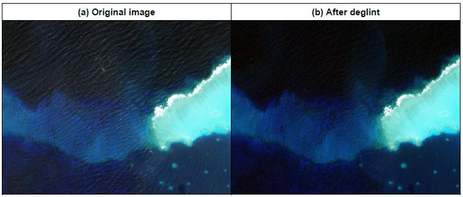
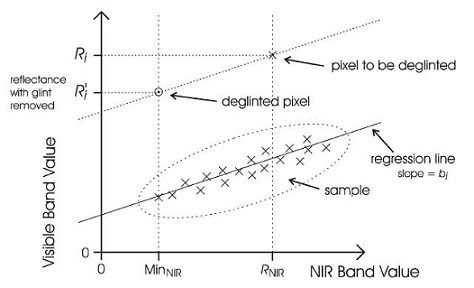

| Deglint Algorithm Specification | |
The purpose of the glint correction or "deglint" is to remove the contribution of the direct reflectance from the top of the air-water interface from the imagery. Such photons have never penetrated the water surface and do not carry spectral information about subsurface features. Dependent on conditions and pixel size glint can manifest as sheen on the surface or as bright lines co-incident with waves.
The deglint algorithm described here is based on Hedley at al. (2005) and other very similar methods described in Kay et al. (2008). The algorithm is entirely image-based, bands in visible wavelengths are corrected one at a time by reference to another band which is in the NIR (near infra-red) or SWIR (short wave infra-red). It is assumed that the NIR reference band only contains the glint (because water is opaque in the NIR) and so the contribution of the glint in the visible band can be estimated by the brightness in the NIR band, by a simple linear relationship. To establish the relationship a linear regression between the two bands is performed over a deep water area, where the contribution from below the water surface is assumed homogenous, and so the derived relationship is only based on the surface reflectance. It is required to specify the minimum expected NIR value in the absence of glint, denoted MinNIR. This can be taken as the minimum value over the sample area (default) or physically set as a number (optional).
